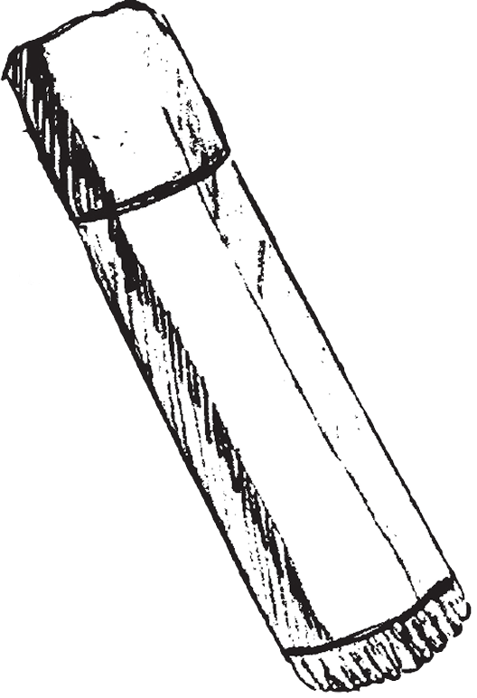
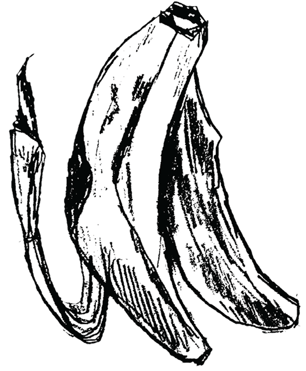
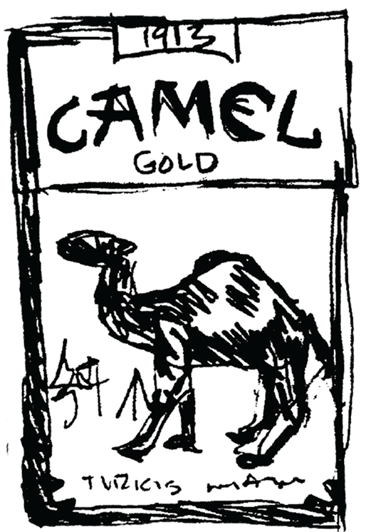
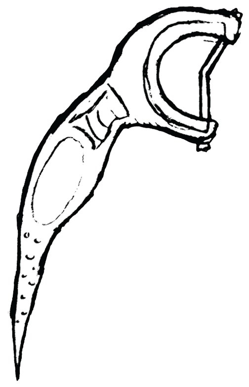
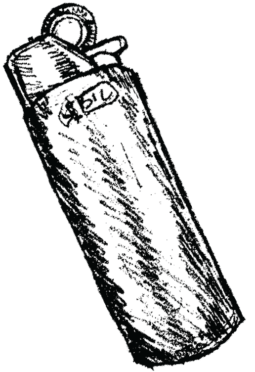

HOME PAGE
Over the course of a month, I collected ten random objects I found near my apartment’s public bench. Each object felt like a trace of someone else’s day left behind, creating an interesting glimpse into the space and its daily visitors. I compiled the objects that I found into five different documentation methods, paying attention to the patterns and the little stories that these objects hold.
The image below visualizes the exact spot I found each object:






